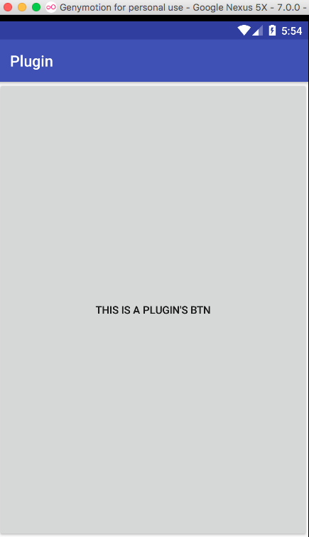

现在安卓插件化已经很成熟，可以直接用别人开源的框架实现自己项目，但是学习插件化的实现原理是安卓研发工程师加深安卓系统理解的很好途径。

安卓插件化学习 插件Activity加载方式分析
实现一套插件化项目很容易，但是投入生产环境，却很难。自己以学习为目的，主要分析其实现原理。
在工作和学习过程中虽然用到或了解到多家安卓插件化实现方式及原理，自己并没有动手实现或参与公司插件化的研发，so业余时间从基础做起，总结插件化实现原理，自己亲自动手踩踩坑，实现原理及思路均来自开源项目及互联网。
本文中首先来分析下插件actibity的加载原理，这里主要以任玉刚专专的DL开源项目中插件实现原理为参考，采用静态代理方式，代理类反射调用没有context的Activity。
思路分析
假如业界没有插件化的实现思路，如果自己接到一个插件化需求，要求可以动态加载安卓四大组件，这些类可以本地预制zip或是云端下载。
回到原点思考问题，怎么实现呢？
首先想到的肯定是ClassLoader，那边安卓平台的ClassLoader是如何应用呢？可以查看Class源码，发现安卓平台SystemClassLoader是PathClassLoader，具体原理看插件化基础ClassLoader.
1 2 3 4 5 6 7 8 9 10 11 12 13 14 15 16 17 18 19 20 21 22 23
| * Encapsulates the set of parallel capable loader types. */ private static ClassLoader createSystemClassLoader() { String classPath = System.getProperty("java.class.path", "."); String librarySearchPath = System.getProperty("java.library.path", ""); return new PathClassLoader(classPath, librarySearchPath, BootClassLoader.getInstance()); }
|
查看安卓系统源码中Activity加载方式，会发现也是用ClassLoader完成的。
1 2 3 4 5 6 7 8 9 10 11 12 13 14 15 16 17 18 19 20 21 22 23 24 25 26 27 28 29 30 31 32 33 34 35 36 37 38 39 40 41 42 43 44 45 46 47 48 49 50 51 52 53 54 55 56 57 58 59 60 61
| private Activity performLaunchActivity(ActivityClientRecord r, Intent customIntent) { ActivityInfo aInfo = r.activityInfo; ...... Activity activity = null; try { java.lang.ClassLoader cl = r.packageInfo.getClassLoader(); activity = mInstrumentation.newActivity( cl, component.getClassName(), r.intent); StrictMode.incrementExpectedActivityCount(activity.getClass()); r.intent.setExtrasClassLoader(cl); r.intent.prepareToEnterProcess(); if (r.state != null) { r.state.setClassLoader(cl); } } public ClassLoader getClassLoader() { synchronized (this) { if (mClassLoader == null) { createOrUpdateClassLoaderLocked(null ); } return mClassLoader; } private void createOrUpdateClassLoaderLocked(List<String> addedPaths) { ...... if (!mIncludeCode) { if (mClassLoader == null) { StrictMode.ThreadPolicy oldPolicy = StrictMode.allowThreadDiskReads(); mClassLoader = ApplicationLoaders.getDefault().getClassLoader( "" , mApplicationInfo.targetSdkVersion, isBundledApp, librarySearchPath, libraryPermittedPath, mBaseClassLoader); StrictMode.setThreadPolicy(oldPolicy); } return; } } public ClassLoader getClassLoader(String zip, int targetSdkVersion, boolean isBundled, String librarySearchPath, String libraryPermittedPath, ClassLoader parent) { ClassLoader baseParent = ClassLoader.getSystemClassLoader().getParent(); synchronized (mLoaders) { if (parent == null) { parent = baseParent; } PathClassLoader pathClassloader = PathClassLoaderFactory.createClassLoader( zip, librarySearchPath, libraryPermittedPath, parent, targetSdkVersion, isBundled); return pathClassloader; }
|
这里可以肯定安卓系统加载自己类及应用层类的ClassLoader为PathClassLoader(打log也可以看出)。那么继续分析PathClassLoader看看能不能加载我们自己未安卓应用的类?
1 2 3 4 5 6 7 8 9 10 11 12 13 14 15 16 17 18 19 20 21 22 23 24 25 26
| /** * Creates a {@code PathClassLoader} that operates on two given * lists of files and directories. The entries of the first list * should be one of the following: * * <ul> * <li>JAR/ZIP/APK files, possibly containing a "classes.dex" file as * well as arbitrary resources. * <li>Raw ".dex" files (not inside a zip file). * </ul> * * The entries of the second list should be directories containing * native library files. * * @param dexPath the list of jar/apk files containing classes and * resources, delimited by {@code File.pathSeparator}, which * defaults to {@code ":"} on Android * @param libraryPath the list of directories containing native * libraries, delimited by {@code File.pathSeparator}; may be * {@code null} * @param parent the parent class loader */ public PathClassLoader(String dexPath, String libraryPath, ClassLoader parent) { super(dexPath, null, libraryPath, parent); }
|
根据注释，该类可以加载jar/zip/apk等压缩包里的dex，自己动手写代码验证下。答案肯定是可以的。
PathClassLoader没有接口可以设置优化后的dex防止地方，默认情况会用dexPath充当，这样的话会有很多现在那我们想自定义优化类path怎么办？
看PathClassLoader的父类BasedexClassLoader会发现，它还有个双胞胎弟弟DexClassLoader，为什么说是双胞胎呢？应为这两个类自己都是啥事都没敢，只是实现接口不太一样，而DexClassLoader为我们提供了优化后dex缓存path，实用更灵活。
但是网上有很多地方说PathClassLoader类只能加载已经按照的应用类，不能加载外部未按照的类。并且有人说art虚拟机不行和dalvik虚拟机可以。根据自己亲自实验，PathClassLoader也是可以加载成功的，
只是dexOutputPath用了默认的路径会有些限制，至于网上很多不一样的说法，个人理解可能不同的虚拟机实现或是不同系统版本可能有兼容性，未找到官方权威说法。
反射一个Activity
按照原始问题思路，有了加载压缩包中dex的ClassLoader，那边我们动态加载一个dex中的activity，看看能不能启动一个activity。
1，准备dex包
写一个简单的apk，包含一个activity，内部做些简单的事情。
1 2 3 4 5 6 7
| @Override protected void onCreate(Bundle savedInstanceState) { super.onCreate(savedInstanceState); Button btn = new Button(this); btn.setText("This is a plugin's Btn"); setContentView(btn); }
|
2，创建ClassLoader
1 2 3 4 5 6
| private DexClassLoader createDexClassLoader(String dexPath) { File dexOutputDir = context.getDir("dex", 0); this.dexOutputPath = dexOutputDir.getAbsolutePath(); DexClassLoader loader = new DexClassLoader(dexPath, dexOutputPath, nativeLibDir, context.getClassLoader()); return loader; }
|
虽然dexOutputPath可以随意自定义，但是还是建议放入/data/data下的应用私有目录中，防止别人修改自己的代码。ClassLoader加载一次最好缓存起来，即加快下次的使用，也解决ClassLoader类隔离问题。
3，反射调用
1 2 3 4 5 6 7 8 9 10 11
| try { Class<?> clazz = getClassLoader().loadClass("com.canking.plugin.MainActivity"); Object obj = clazz.newInstance(); Method method = clazz.getDeclaredMethod("onCreate", Bundle.class); method.setAccessible(true); method.invoke(obj, new Bundle()); } catch (Exception e) { Log.e("changxing", "load error:" + e.getMessage()); e.printStackTrace(); }
|
然而报错了
分析：首先反射调用是没问题的，完全可以从自己的压缩包中加载类（activity）。但是在反射调用onCreate时类内部报NullPointerException错误了。
这时发现new Button（this）时，this中的baseContext为null。这里分析，一个正常的activity是什么时候才有Context呢？查看源码找答案。
1 2 3 4 5 6 7 8 9 10 11 12 13 14 15 16 17 18 19 20 21 22 23 24 25 26 27 28 29 30 31 32 33 34 35 36 37 38 39 40 41 42 43 44 45 46
| private Activity performLaunchActivity(ActivityClientRecord r, Intent customIntent) { ...... Activity activity = null; try { java.lang.ClassLoader cl = r.packageInfo.getClassLoader(); activity = mInstrumentation.newActivity( cl, component.getClassName(), r.intent); } catch (Exception e) { } try { Application app = r.packageInfo.makeApplication(false, mInstrumentation); if (activity != null) { ／／为activity构造Context Context appContext = createBaseContextForActivity(r, activity); activity.attach(appContext, this, getInstrumentation(), r.token, r.ident, app, r.intent, r.activityInfo, title, r.parent, r.embeddedID, r.lastNonConfigurationInstances, config, r.referrer, r.voiceInteractor, window); ...... } final void attach(Context context, ActivityThread aThread, Instrumentation instr, IBinder token, int ident, Application application, Intent intent, ActivityInfo info, CharSequence title, Activity parent, String id, NonConfigurationInstances lastNonConfigurationInstances, Configuration config, String referrer, IVoiceInteractor voiceInteractor, Window window) { attachBaseContext(context); mFragments.attachHost(null ); } protected void attachBaseContext(Context base) { if (mBase != null) { throw new IllegalStateException("Base context already set"); } mBase = base; }
|
正常的的Activity被AMS反射调用，在attach后就有了Context，那我们自己反射的Activity要想有ConText，就要模拟AMS调用方式，构造Context，但是这相当于再写个系统，不可实现，那怎么办？
遇到问题，解决问题。
插件中被反射的activity没有了Context，我们可以把主apk的Acitvity的Context传递给插件Acitivity。
形成方案
有了以上分析，我们可以专门写个主Apk中的Activity，用来处理插件中所需要的变量及资源，也可以调用插件中的部分方法。这样这个类就变成类一个代理类。
这样就形成了DL开源项目中的静态代理方式实现的插件方案。进一步动手代码实验，只要activiyt的每个回调接口都能回调到插件中的activity相同方法，并且插件中的对activity的每个设置都能够回调到主apk中代理类处理，
这个插件方式就可以完美运行，至少针对目前的Activity没问题。

设置主插件Title为插件中Activity名字,让它“更像”插件页面。
1 2 3 4 5 6 7 8 9 10
| public CharSequence getActivityTitle(Context context, String activityName) { if (packageInfo.activities != null && packageInfo.activities.length > 0) { for (ActivityInfo info : packageInfo.activities) { if (info.name.equals(activityName)) { return info.loadLabel(context.getPackageManager()); } } } return ""; }
|
loadLabel（） 方法需要给加载PackageInfo设置压缩包的sourceDir和publicSourceDir.
1 2 3
| //for activity name packageInfo.applicationInfo.sourceDir = dexPath packageInfo.applicationInfo.publicSourceDir = dexPath
|
实现总结
我们回调原点来从基础分析DL项目静态代理方式实现插件的实现过程，回顾下，发现这种方式是最容易想到，那我们为什么没有比DL作者【任玉刚】早点想到并实现呢？答案是：“没有对应的眼界，不够勤快。”
用玉刚常说的一句好说就是”这个社会还没到比聪明时代，想进步，就得比别人多用时间“。
静态代理方式虽然可以实现插件方式，但是用起来还是不方便，接下来我们进一步学习插件化，分析hook系统方法动态代理方式的思想的实现。
——————
欢迎转载，请标明出处：常兴E站 www.canking.win